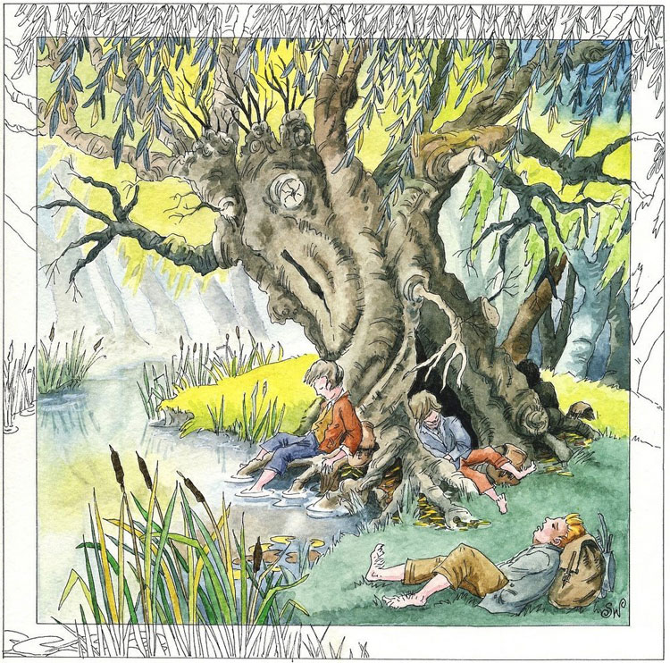

© 2021 Festival Art and Books. All rights reserved. Interview with Sue Wookey When did you first come across Tolkien's works? I remember a teacher reading us The Hobbit when I was a tiny tot and loving it. I particularly remember being entranced by the cover of the book (Tolkien’s, of course). In the Sixth Form I had a friend who had discovered The Lord of the Rings and who went on and on and ON about it. She drove me nuts and in the end I gave in and read it just to keep her quiet. Then we talked about nothing else… What made you want to illustrate Tolkien's worlds? Everyone has their own Middle-earth in their head and I wanted to recapture mine after the Peter Jackson films. I found that when I really thought about it, a lot of ‘my’ Middle-earth was very fuzzy in places. I had Treebeard’s face but had somehow never thought too much about how the rest of him worked. I had Tom Bombadil’s leaping figure, but had never looked him in the eye. It’s been great fun pulling those details into focus. What makes Tolkien's works special for you? Where to start. Everything! Is that too vague? Seriously – there is a great, big, shining light of truth at the heart of Tolkien that shows us what we should be and can be, if we have the heart for it. Sometimes it takes a fantasy to unveil a reality. What medium do you use? I use ink to define the drawing and then wash with watercolour and some gouache (to add a bit of oomph and body). I love the way watercolour runs around and does its own thing, though I admit I keep it under sterner control for the Tolkien work. How do you go about choosing a scene to interpret? It’s usually a scene that ‘haunts my head’. A sudden visual moment that pops up while I’m reading that sticks there until I draw it: Tom looking through the Ring, the moment when the reborn Gandalf is sitting quietly in Fangorn Forest and a shaft of light breaks through the trees and falls into his open hands. Beautiful images that make you stop and pause as you read. Does your local countryside to where you live influence the world you depict? I’m out and about in it constantly with my camera and although I haven’t used the landscapes, it’s all in the detail! Some of the trees are my friends. What do you think of the LotR movies by Jackson, and have they affected the way you view Middle earth at all? I loved them, faults and all. Tolkien’s myths, like all great myths, evolve in the retelling, something we know Tolkien acutely understood. He probably would have hated some of the changes but I think he would have acknowledged that the stories that don’t continue to grow are poor, thin apologies for stories. The fact his myths can take it and thrill us in a new medium shows how far he succeeded in his sub-creation. And, of course, we still have the source! I thought the visualisation of Middle-earth in the films was wonderful – how could it not be with Lee, Howe and all those other fantastic artists on board? But part of the reason I wanted to paint scenes from LotR was to re-find my own vision. Who are your influences in terms of painters/ artists? I have a lot of artists whose work I really admire but who don’t do anything remotely like me (as I know I have no hope of emulating them). I do really enjoy creating figures and it’s probably because I spent my mis-spent youth with pencils and acres of paper trying to emulate Michelangelo’s drawings. Is there any particular scene you would like to tackle next? I’ve been meaning to tackle Aragorn and the Palantir for a long time now and have a series of sketches to work up from. It’s such an important moment for Aragorn but in the books we only know what he feels he can share of that terrible experience. I’ve got Aragorn and the Palantir sorted, but what’s going on in the background? There’s the rub. Maybe I’ll just make it Very Dark. What other writers' works are you moved to illustrate? In terms of fiction it’s been Tolkien all the way, although all my other work - which revolves around my interest in symbolism and myth - is heavily influenced by what I read. Not quite the same thing, of course, but I owe Joseph Campbell a very big ‘thank you’!
 |
|